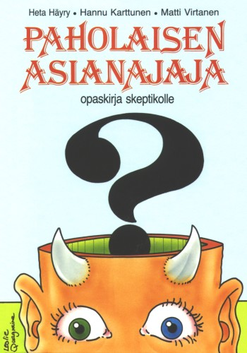

Kansipiirros
Leslie Quagraine
Paholaisen asianajaja – opaskirja skeptikoille
Esipuhe
Carl Sagan:
Epäilijän taakka
S. Albert Kivinen:
Mitä ’paranormaaleilla ilmiöillä’ tarkoitetaan?
Matti Häyry:
Ihmeet ja niiden kokeminen
Ilkka Tuomi:
Parapsykologian paradokseja
Nils Edelman:
Taikavarvut ja maasäteily
Nils Mustelin:
Astrologian oudot maailmat
Hannu Karttunen:
Ufot, ifot ja pienet vihreät henkilöt
Heta Häyry:
Vaihtoehtolääkintä: huomioita ja arviointia
Matti Virtanen:
Lukujutun houkutus
Raimo Tuomela:
Tiede, esitiede, pseudotiede